Node-RED avançat
En esta part final de la unitat anem a veure algunes característiques més avançades de Node-RED.
Altres nodes comuns
Anem a veure alguns nodes de la secció "Común" que no havíem tractat fins ara.
Complete
El node complete permet marcar un missatge com a complet. Això pot ser útil per indicar que s'ha acabat de processar un missatge, o per indicar que s'ha arribat al final d'una seqüència de missatges.
Com sabeu, ni ha nodes que no reaccionen a l'entrada de missatges fins que no reben un missatge complete. Això és útil per a processos que necessiten saber quan han acabat de rebre missatges. Ahí teniu una possible utilitat de complete.
Catch
El node catch permet capturar errors que es produeixen en el flux (en la mateixa pestanya). Això pot ser útil per gestionar errors, o per enviar missatges d'error a un node debug o a un node email.
Status
El node status permet mostrar l'estat d'altres nodes que pertanyen al mateix flux (en la mateixa pestanya) en la interfície de Node-RED. També podem saber quin node ha informat del seu estat, i quin estat ha informat. Una possible utilitat és mostrar l'estat d'un sensor en la interfície de Node-RED.
Comment
El node comment permet afegir comentaris al flux. No generen cap acció.
Link in i Link out
Els nodes link in i link out permeten connectar dos parts del flux que estan separades. Això pot ser útil per connectar dos parts del flux que estan lluny l'una de l'altra, o per connectar dos fluxos diferents (en diferents pestanyes).
Si hi ha més d'un node link in amb el mateix nom, tots rebran el missatge. Això pot ser útil per connectar un node link out a més d'un node link in. Si volem separar els diferents fluxos, donarem diferents noms a cada parella link in-link out.
Link call
El node link call permet cridar un node link in des d'un altre node. Això pot ser útil per cridar una part del flux des d'una altra part del mateix flux, o des d'un altre flux.
Altres nodes de funció
A més dels nodes de funció que ja hem vist, és útil conèixer els següents:
Template
El node template permet crear missatges a partir de plantilles. Això ens permet crear missatges amb un format concret, o a partir de variables. Amb el node template crearem una plantilla que després se completarà amb els valors que li arriben per payload.
Exemple: podem crear un node template amb el contingut La temperatura actual és {{payload}}ºC, i connectar-lo a un node debug. Quan li arribe un missatge amb un valor de temperatura, el node template substituirà {{payload}} pel valor de temperatura, i el node debug mostrarà el missatge La temperatura actual és 25ºC.
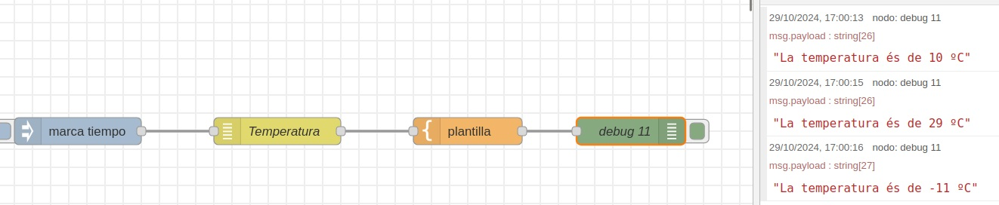
Delay
El node delay permet retardar l'enviament d'un missatge. Això pot ser útil per esperar un temps determinat abans d'enviar un missatge, o per evitar enviar missatges massa ràpidament. Hi ha moltes opcions que podem configurar, així que recomanem que consulteu l'ajuda oficial de Node-RED.
Wait-paths
El node wait-paths permet esperar fins que arriben tots els missatges d'un grup, emesos per diferents fonts, per generar un únic missatge d'eixida. Això pot ser útil per esperar fins que arriben totes les dades d'un grup de sensors, per exemple.
Els missatges entrants han de tindre en la propietat paths una clau que l'identifica i un valor que s'envia. El node wait-paths espera fins que arriben tots els missatges amb la mateixa clau o amb les claus especificades, i quan arriben tots envia un únic missatge amb totes les claus i valors.
Podem fer un exemple utilitzant el node delay per fer que els missatges arriben en moments diferents, i nodes change per afegir la clau paths als missatges. En l'exemple següent un inject envia una senyal que passa directament a un change que crea un path, per un costat, i per un altre costat la mateixa senyal s'envia a un altre change que estableix un altre path amb altres valors, però passant prèviament per un delay. Així podem veure que fins que els dos paths especificats no arriben, el node debug no mostra res.
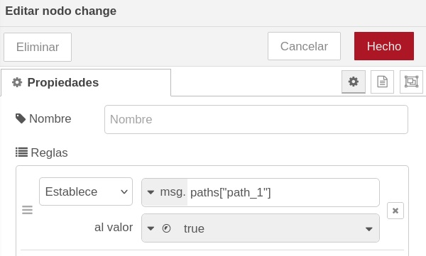
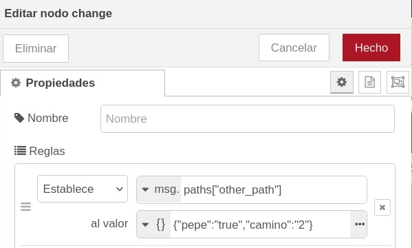
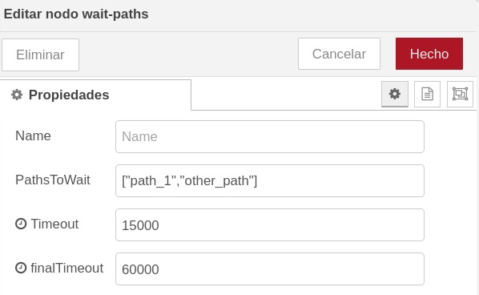
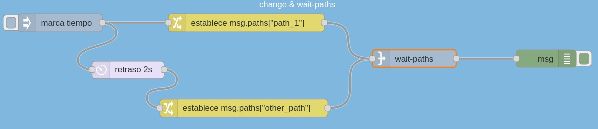
L'exemple el teniu en el flux importat
Basic node & operationsi per tant podeu provar el seu funcionament.
Data generator
El node data generator permet generar dades aleatòries. Això pot ser útil per provar el flux amb dades fictícies, o per generar dades per a un node chart. L'advantatge d'aquest node respecte a random és que podem generar dades de diferents tipus, com ara noms, text, dates, etc., fins i tot amb un significat concret (noms inventats, poblacions, països, etc.)
Per exemple, en un node data generator podem escriure la següent plantilla com a valor del payload:
{
"name": "{{firstName}} {{lastName}}",
"work": "{{company}}",
"email": "{{email}}",
"age": "{{random.number(100)}}",
"city": "{{address.city}}",
"country": "{{address.country}}"
}
Això generarà un missatge amb un nom, una empresa, un correu electrònic, una edat, una ciutat i un país aleatoris. Podeu veure el contingut del node data generator i la seua eixida en les següents imatges.
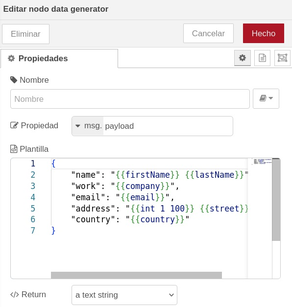
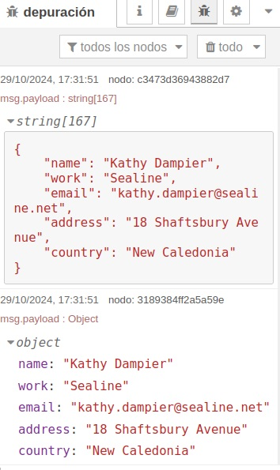
Nodes analitzadors
Anem a veure alguns nodes de la secció "Analysers" que poden ser útils per analitzar dades.
CSV
Converteix de cadenes CSV a objectes JavaScript, i viceversa.
JSON
Converteix de cadenes JSON a objectes JavaScript, i viceversa.
HTML
Converteix de cadenes HTML a objectes JavaScript, i viceversa.
XML
Converteix de cadenes XML a objectes JavaScript, i viceversa.
YAML
Converteix de cadenes YAML a objectes JavaScript, i viceversa.
Podeu fer proves redirigint un node inject a un node csv amb un valor com 1,2,3,4,5, per exemple, i veure com el converteix en un objecte JavaScript. També podeu crear una plantilla en format JSON i passar-la a un node json per veure com la converteix en un objecte JavaScript. Al revés també funciona.
En l'exemple del data generator que hem vist abans, podem veure que se genera un objecte JavaScript que se mostra directament en un debug, i per altra banda filtrem l'objecte a través d'un node json abans de passar-lo a l'altre debug. Així, mostrem per una part l'objecte JavaScript original, i per altra part la conversió a json.
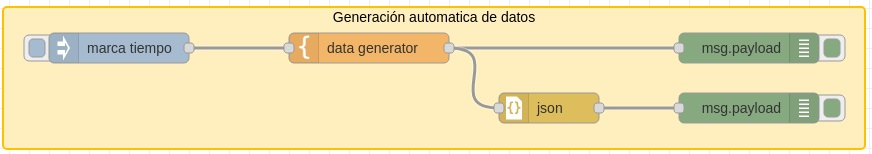
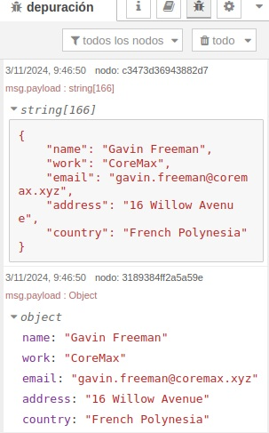
En este moment podeu intentar fer l'exercici 1 que trobareu al final del document.
Arrancar i parar fluxos amb variables de flux
Quan vam veure com crear variables dins d'un missatge, comentàrem també que se poden crear variables de flux. Eixes variables són visibles per tot el flux, i poden ser utilitzades, entre altres coses, per controlar l'execució del flux.
Una forma típica de fer-ho és utilitzar un node inject per enviar un missatge amb valor true, i un altre que envie un missatge false. Els dos nodes inject envien el seu valor a un node change que el llegirà i serà el que canviarà el valor de la variable de flux.
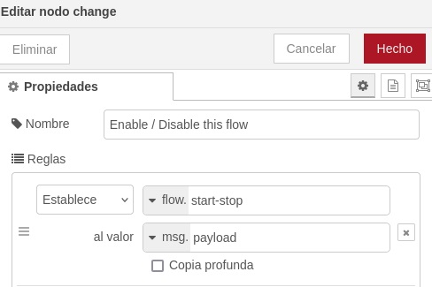
Després, en un altre flux de dades dins del mateix grup, podem utilitzar un node switch per preguntar si la variable de flux és true o false, i permetre que continue el flux o no. Podem fer que si la variable és true el flux continue per l'eixida 1 del switch, i que si és false no continue per cap eixida.
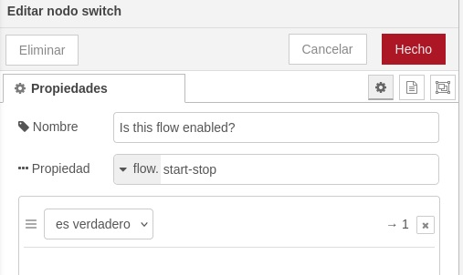
En este moment podeu intentar fer l'exercici 2 que trobareu al final del document.
Nodes de xarxa
Anem a veure alguns nodes relacionats amb la comunicació amb altres dispositus o serveis.
HTTP request
El node http request permet fer peticions HTTP a altres servidors. Això pot ser útil per obtenir dades d'una API, per enviar dades a un servidor (method PUT, POST), o per rebre dades d'un servidor (GET). També, amb el mètode DELETE, per eliminar dades.
Per a que funcione, hem d'especificar la URL del servidor, el mètode HTTP (GET, POST, PUT, DELETE), i opcionalment les dades a enviar. Podem connectar-nos a endpoints creats per nosaltres amb Node-RED, o a qualsevol altre servidor que tinga una API HTTP.
Per exemple, hi ha una API que ens permet obtenir les coordenades de la ISS (Estació Espacial Internacional). Podem utilitzar el node http request per obtenir les coordenades de la ISS, i després utilitzar-les per mostrar-les en un node debug o en un node ui_text.
L'adreça és http://api.open-notify.org/iss-now.json.
Així, el node http request quedaria així:
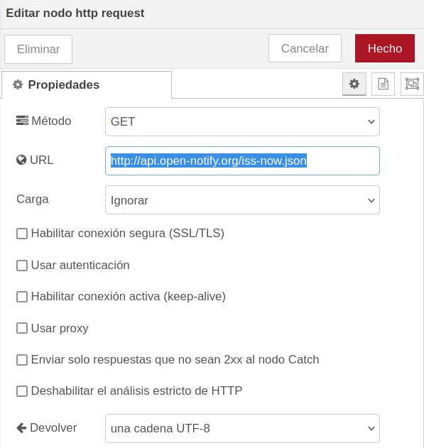
Podem passar el response a través d'un filtre JSON (converteix el JSON rebut a un objecte JavaScript) i el mostrem amb un node debug.
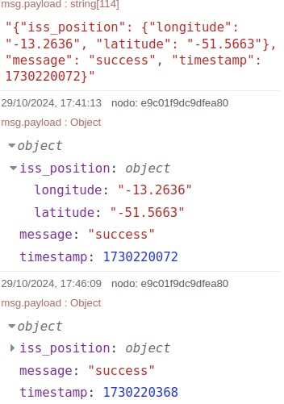
També podríem mostrar les dades en forma gràfica, però això ho veurem més endavant.
HTTP response
El node http response permet enviar respostes HTTP a clients que han fet una petició HTTP. Això pot ser útil per crear una API HTTP amb Node-RED, o per respondre a peticions HTTP d'altres servidors.
Per enviar peticions a un node http_response necessitem un node http in que serà el nostre endpoint al que li podrem enviar peticions des del navegador, Postman, curl, o similar.
HTTP in
El node http in permet crear un endpoint HTTP al que es poden fer peticions HTTP. Així podem crear la nostra API amb Node-RED.
Anem a veure un exemple senzill amb http in i http response.
Creem un node http in amb la següent configuració:
- Method: GET
- URL: /test
Ara connectem el node http in a un node template amb contingut HTML. En el payload podem posar, per exemple:
<!DOCTYPE html>
<html>
<head><title>Prova Node-RED</head>
<body>
<h1>Hola! Benvingut a la meua API generada amb Node-RED</h1>
</body>
</html>
Finalment, connectem el node template a un node http response que serà el que tornarà la resposta al client. En el node http response no cal configurar res, ja que la resposta ja està configurada en el node template, però podem afegir un codi d'estat i unes capçaleres, si volem.
El resultat se veuria així:
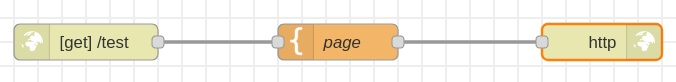
Fixeu-vos que, a diferència del node inject, no podem llançar manualment el node http in. Ho hem de fer des d'un navegador o un programa tipus Postman, curl o similar. Recordeu que li havíem donat el nom test al endpoint. Així, hem d'accedir a l'adreça http://localhost:1881/test des del navegador i veurem què ens torna el node http response.
Hauríem de veure:
Nodes d'arxius
Anem a veure alguns nodes de la secció almacenamiento que poden ser útils per llegir i escriure arxius.
Escribir archivo
El node escribir archivo permet escriure dades en un arxiu. Podem afegir informació al final de l'arxiu, o sobreescriure totalment el seu contingut.
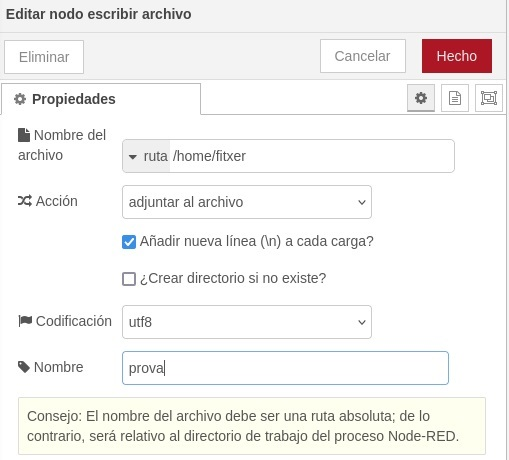
Leer archivo
El node leer archivo permet llegir dades d'un arxiu. Se pot tornar tot el contingut de l'arxiu en una cadena, un missatge diferent per cada línia de l'arxiu, o bé un objecte (o un stream d'objectes) de tipus Buffer.
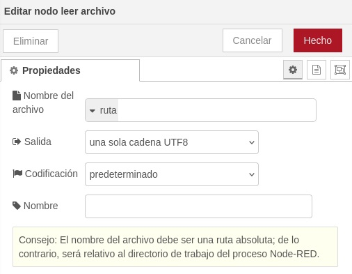
Pots intentar fer una prova generant un conjunt de dades aleatòries, guardant-les en un arxiu, i després llegint-lo i mostrant-lo en un node debug.
Ara ja pots fer la resta d'exercicis que trobaràs a continuació.
Exercicis
Exercici 01
Imaginem que tenim 2 estacions meteorològiques que comuniquen dades de manera independent en un mateix instant de temps. Volem guardar les dades de les dues estacions en un sol document JSON i mostrar-lo amb un node debug
La primera estació envia les següents dades:
- NO, NO2, NOx, SO2, Humitat, Temperatura, Velocitat del vent, Direcció del vent.
La segona estació envia només dues dades:
- CO i CO2.
Les dades seran generades aleatòriament amb el node data generator. Tots els valors poden tindre decimals i un valor mínim de 0 i un màxim de 50. Cada estació enviará valors nous a intervals de 0.5 segons.
Tots dos conjunts tindran un camp Data que serà l'input del payload i que haurem de construir a partir del timestamp del injector .
Hem de juntar tots dos conjunts de dades en un sol utilitzant el node join i aplicant tot el que hem vist.
Exercici 02
Fent ús de les variables de flux, modifica l'exercici anterior per poder iniciar, parar o reiniciar la injecció de dades.
-
Necessitarem tindre 2 fluxes de dades en un mateix grup.
-
El primer flux de dades tindria els nodes
injectper activar o desactivar el segon flux. -
El segon flux de dades seria el mateix que l'exercici anterior.
-
En el primer flux de dades podem utilitzar un node
injectper enviar un missatgetruei un altre per enviar un missatgefalse. El valor s'hauria de guardar en una variable de flux. -
En el segon flux de dades pots utilizar el node
switchper preguntar si la variable de flux éstrueofalsei permetre que continue el flux o no.
Exercici 03
Instal·la el node flightradar24 i busca informació a veure com funciona. Podem demanar informació dels vols que estan passant per la nostra zona? Com? Intenta fer-ho. Envia l'eixida a un node debug que mostre el resultat, i analitza les dades rebudes.
Exercici 04
Modifica el flux anterior per guardar en un arxiu vols.txt l'aeroport d'origen, el de destí, el número de vol, l'altitud i la velocitat.